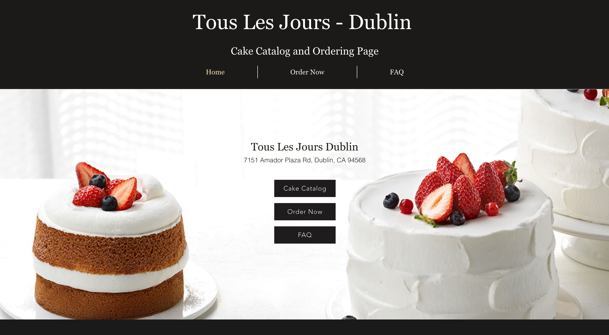

Reimagining the customer and associate experience at a bakery.
Skills
UX Design
Product Design
Duration
2 weeks, Spring 2023
Tools
Figma

Context
Tous les Jours Dublin was a location belonging to the international franchise under the same name, that was struggling to adapt to its natural growth as a business.
The lack of unity, security, and reliability of the ordering system caused confusion among both customers and staff.
I had worked at Dublin Tous Les Jours (TLJ) in high school and decided to address some of the innefficiencies that I noticed in the ordering system by creating a website. However, this site sported poor visual design and wasn't integrated into bakery’s unique system given the limitations of Wix, which it was hosted on. As such, this site only superficially resolves problems around ordering and picking-up cakes
As a self-initiated challenge, I decided to revisit this problem space over a two-week period in order to create a product that might respond to the issues I experienced while working at Dublin TLJ. The project had two main objectives:
Increase trust and return rate of customers and improving overall organization and efficiency of system
Research
My first step was to interview a few former coworkers and current customers that interacted heavily with the cake-ordering system at TLJ. Given my limit on time and resources, I knew that speaking to "super users" of the system, as well as making inferences for the learning curves they exerienced, would be the best way to tackle the research phase of this project.